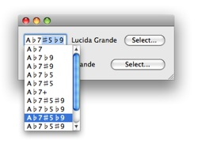
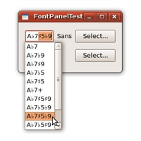
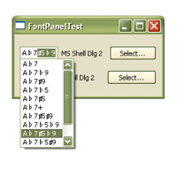
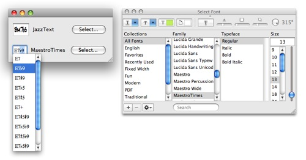

I discuss my Qt project that demonstrates the implementation of text completion for a QLineEdit widget that provides very Mac-like interactions. It works well on Mac, Linux, and Windows. I’ve even added a few improvements over an ordinary Apple HIG text completion popup!
Qt has a class called QCompleter for implementing text completion. It’s quite easy to use: set up a string list model for the possible completions, hook it up with (e.g.) a QLineEdit widget, and you’re all set. As you type into this widget, a popup menu shows you all the possible completions. See the sample code for its use at Qt’s documentation website.
Unfortunately the interaction provided by this default implementation is quite rudimentary and certainly not very “Mac-like”. For instance, the text completion popup menu is always on and continuously updated with possible completions as the user types. If one thinks of text completion as a “help” mechanism, one’d probably prefer a popup menu that appears only when a special key is pressed (F5 or Option-Escape on the Mac).
Also, when the user selects one of the completions, QCompleter replaces the entire string in the QLineEdit widget with it and places the text cursor after its last character. This is a bit counter-intuitive because one tends to think of the suffix inserted by the completion operation as a single unit. E.g., if the user types a character at this time, this suffix should be replaced by that character. On the Mac, the inserted suffix is highlighted, which provides the expected interaction.
I wrote a sample project that shows how with a bit of code one can implement a text completion popup that behaves very much like one on the Mac. In fact I’ve improved on that a little (see below). Here’s a Mac screenshot of the kind of text box I provide for entering chords in my music analysis program.
On Linux:
And on Windows:
What complicates the implementation somewhat is some music fonts (such as Jazz Text and Maestro Times) look better when used with their own sharp and flat characters which have different codes from the Unicode standard. Here’s a screenshot of the use of these fonts for two different chord edit boxes and a font panel.
Notice that the completion popup menu uses the same font as its chord edit box. Cocoa text completion popups always use the system font, which to me don’t look as nice for chords.
Here’s perhaps a bigger improvement. When a Cocoa text completion popup is shown (as a result of the user hitting F5 or Opt-Esc), any key other than up or down arrow (and mouse events) will break out of text completion and hide the popup. So when you type “E7” and hit F5, you see all the chords that begin with “E7”. If you type ‘b’ at this time (which is automatically converted to a ♭ by the validator), a Cocoa text completion popup will hide itself and you need to hit F5 again to see all the chords that begin with “E7♭”. My implementation will instead show these chords immediately. In fact the user can back over characters of the original prefix and the popup will be updated accordingly. In this sense once text completion starts, the text field behaves much like the search box of an incremental search, which provides not only greater convenience but also a natural and familiar interaction.
In addition to serving as a nice sample implementation of text completion, this project also shows how to call up a non-model font panel that behaves very Mac-like, the use of a validator for input “error correction” (e.g., “abmaj7” is converted automatically to “A♭Maj7”), how to provide a concrete implementation of an abstract list model, and how widgets can be resized dynamically. Lots of cool stuffs in a little sample program!
Note that this code is for non-commercial use only and disallows derivative works. However I will consider taking from it a couple of chunks of less than ten lines each “fair use”.
Category: Programming